Responsable del tratamiento
María Fernández Fernández es la responsable del tratamiento de los datos personales recogidos a través de esta aplicación.
Datos que se recopilan
Esta aplicación puede recopilar datos relativos al uso de la app (páginas visitadas, funciones utilizadas) y datos básicos del dispositivo (sistema operativo, modelo del dispositivo) con fines de mejora del servicio.
Finalidad
Los datos recopilados se utilizan exclusivamente para prestar y mejorar el servicio ofrecido por la aplicación.
Cesión de datos a terceros
No se comparten datos personales con terceros, salvo obligación legal.
Derechos del usuario
El usuario tiene derecho a acceder, rectificar y suprimir sus datos personales, así como a ejercer otros derechos reconocidos por la normativa vigente en materia de protección de datos. Para ejercer estos derechos, puede ponerse en contacto con nosotros a través del correo electrónico indicado a continuación.
Contacto
Para cualquier consulta relacionada con esta política de privacidad, puede escribirnos a: contacto@mariafernandeztarot.com